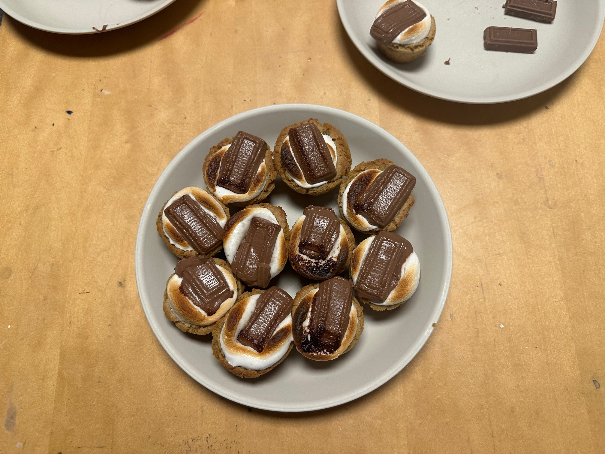

Prep Time: 10-15 minutes, Bake Time: 10-15 minutes, Total Time: roughly half an hour.

S'mores are delicious. Cookies are delicious. Why not put them together!
These mouth-watering cookies are a combination of the classic camping treat of melted marshmallows with chocolate and the priceless age-old classic of lovingly homemade cookies. Fresh from the oven, like marshmallows fresh from the fire, they taste good. Really good.
For a single batch, use these ingredients. For half or double recipes, half or double all quantities.